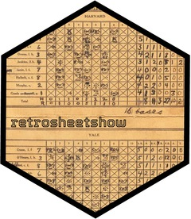

retrosheetshow 
RETROSHEET DATA NOTICE
The information used here was obtained free of charge from and is copyrighted by Retrosheet. Interested parties may contact Retrosheet at 20 Sunset Rd., Newark, DE 19711.
Website: https://www.retrosheet.org
retrosheetshow provides a convenient and tidy interface for accessing Retrosheet baseball data in R. The package follows tidyverse principles, making it easy to integrate Retrosheet’s play-by-play event files, game logs, rosters, and schedules into your data analysis workflows.
Installation
You can install the development version of retrosheetshow from GitHub:
# install.packages("remotes")
remotes::install_github("tgerke/retrosheetshow")Overview
Retrosheet is a non-profit organization that has digitized play-by-play accounts of baseball games. This package makes it easy to:
- List available event files by year and type (regular season, all-star, post-season)
- Download and parse event files into tidy tibbles
- Extract specific information like game metadata or play-by-play details
Basic Usage
List Available Event Files
Use list_events() to see what data is available:
library(retrosheetshow)
# List recent regular season files
list_events(year = 2020:2024)
# List all available All-Star game files
list_events(type = "allstar")
# List multiple types for a specific year
list_events(year = 2023, type = c("regular", "post"))Download Event Data
Use get_events() to download and parse event files:
# Download 2024 regular season
# First time: ~2 minutes (downloads and caches)
# Subsequent times: ~5 seconds (uses cache)
events_2024 <- get_events(year = 2024)
# Pipe from list_events()
recent_postseason <- list_events(year = 2020:2024, type = "post") |>
get_events()Note: First downloads take 1-2 minutes but are automatically cached. Subsequent access is much faster!
Extract Specific Information
Use helper functions to extract game info or play-by-play data:
# Get game-level metadata
game_info <- get_game_info(events_2024)
# Get play-by-play data
plays <- get_plays(events_2024)
# Parse specific record types
parsed <- parse_event_records(events_2024, record_types = c("play", "sub"))Game Logs, Rosters, and Schedules
Access summary data and team rosters:
# Game logs (one row per game with summary stats)
gamelogs_2024 <- get_gamelogs(year = 2024)
# Team rosters by year
rosters_2024 <- get_rosters(year = 2024)
yankees <- get_rosters(year = 2024, team = "NYA")
# Game schedules
schedule_2024 <- get_schedules(year = 2024)Reference Data Helpers
Get Retrosheet reference data for parks, teams, and players:
library(dplyr)
# Get ballpark codes and info
parks <- get_park_ids()
# Get team codes for a specific year
teams <- get_team_ids(2024)
# Get player biographical database
players <- get_player_ids()
# Example: Find Fenway Park info
parks |> filter(grepl("Fenway", name))Workflow Example
Here’s a complete workflow to analyze recent World Series games:
library(retrosheetshow)
library(dplyr)
# Get recent post-season data
postseason <- list_events(year = 2020:2024, type = "post") |>
get_events()
# Extract game information
games <- get_game_info(postseason)
# Filter to World Series games
world_series <- games |>
filter(grepl("^WS", game_id))
# Get play-by-play for these games
plays <- get_plays(postseason) |>
semi_join(world_series, by = "game_id")Live Data Examples
Here are some examples with real Retrosheet data:
Game Logs: Quick Summary Statistics
Game logs provide fast access to summary statistics (one row per game):
library(retrosheetshow)
library(dplyr)
# Download 2023 game logs (we'll use 2023 to show completed season data)
gamelogs <- get_gamelogs(year = 2023)
# Preview the data
gamelogs |>
select(date, visiting_team, home_team, visiting_score, home_score,
winning_pitcher_name, attendance) |>
head(5) |>
knitr::kable()| date | visiting_team | home_team | visiting_score | home_score | winning_pitcher_name | attendance |
|---|---|---|---|---|---|---|
| 20230330 | SFN | NYA | 0 | 5 | Cole,Gerrit | 47282 |
| 20230330 | CHN | MIL | 4 | 0 | Hendricks,Kyle | 44253 |
| 20230330 | SDN | COL | 2 | 1 | Snell,Blake | 30427 |
| 20230330 | TOR | SLN | 10 | 9 | Berrios,Jose | 44190 |
| 20230331 | MIN | KCA | 1 | 4 | Greinke,Zack | 27021 |
Sample of 2023 Game Logs
Home Field Advantage Analysis
# Calculate home field advantage
gamelogs |>
mutate(
home_score = as.numeric(home_score),
visiting_score = as.numeric(visiting_score),
home_won = home_score > visiting_score
) |>
summarize(
total_games = n(),
home_wins = sum(home_won),
home_win_pct = scales::percent(mean(home_won), accuracy = 0.1)
) |>
knitr::kable(caption = "2023 Home Field Advantage")| total_games | home_wins | home_win_pct |
|---|---|---|
| 2430 | 1318 | 54.2% |
2023 Home Field Advantage
Team Rosters
Get and display team rosters:
# Get Yankees 2023 roster
yankees <- get_rosters(year = 2023, team = "NYA")
yankees |>
select(last_name, first_name, bats, throws, position) |>
arrange(last_name) |>
head(10) |>
knitr::kable()| last_name | first_name | bats | throws | position |
|---|---|---|---|---|
| Bader | Harrison | R | R | 8 |
| Bauers | Jake | L | L | 3 |
| Cabrera | Oswaldo | S | R | 5 |
| Cole | Gerrit | R | R | 1 |
| Donaldson | Josh | R | R | 5 |
| German | Domingo | R | R | 1 |
| Holmes | Clay | R | R | 1 |
| Judge | Aaron | R | R | 9 |
| LeMahieu | DJ | R | R | 4 |
| Rizzo | Anthony | L | L | 3 |
Sample of Yankees 2023 Roster
Top Winning Pitchers
# Most wins in 2023
gamelogs |>
count(winning_pitcher_name, name = "wins", sort = TRUE) |>
head(10) |>
knitr::kable(col.names = c("Pitcher", "Wins"))| pitcher | wins |
|---|---|
| Webb,Logan | 15 |
| Gallen,Zac | 14 |
| López,Pablo | 14 |
| Strider,Spencer | 14 |
| Clase,Emmanuel | 13 |
| Jansen,Kenley | 13 |
| Lynn,Lance | 13 |
| Fried,Max | 12 |
| Gausman,Kevin | 12 |
| Nola,Aaron | 12 |
Top 10 Winning Pitchers in 2023
Data Types
retrosheetshow provides access to multiple Retrosheet data formats:
Play-by-Play Events
Detailed play-by-play data (the core of Retrosheet). Event files contain several types of records:
-
id: Game identifier -
version: File format version -
info: Game metadata (date, teams, site, attendance, etc.) -
start: Starting lineups -
play: Play-by-play events (the heart of the data) -
sub: Player substitutions -
com: Comments -
data: Additional data (earned runs, etc.)
The package parses these into a tidy format while preserving the original structure.
Retrosheet Attribution
This package uses Retrosheet data. Per Retrosheet’s requirements, this notice must appear prominently:
The information used here was obtained free of charge from and is copyrighted by Retrosheet. Interested parties may contact Retrosheet at 20 Sunset Rd., Newark, DE 19711.
Retrosheet is an all-volunteer 501(c)(3) charitable organization. To support their incredible work: - Volunteer: Visit retrosheet.org - Donate: retrosheet.org/donate
The retrosheetshow package is not affiliated with Retrosheet but is grateful for their work in preserving baseball history.
Features
- Smart caching: Downloaded files are cached locally - first download takes 1-2 min, subsequent access is ~5 sec
- Tidy design: Returns tibbles and works seamlessly with dplyr, tidyr, and other tidyverse packages
-
Pipe-friendly: Functions designed for use with
|>or%>% - Progress feedback: Uses cli for informative progress messages
-
Cache management:
cache_status(),clear_cache(), anduse_cache()for full control - Flexible: Download specific years/types or explore all available data
- Type-safe parsing: Converts fields to appropriate types (integers, characters, etc.)
Data Coverage
Retrosheet has digitized data spanning over a century:
- Regular season: 1911-2024 (some earlier box score data available)
- All-Star games: 1933-2024 (with some gaps)
- Post-season: 1903-2024 (with some gaps)
- Negro Leagues: Various years available
See the Retrosheet website for complete details on data availability.
Performance
First downloads take 1-2 minutes, but files are automatically cached for fast repeated access:
# View cached files
cache_status()
# Clear cache to free disk space
clear_cache()See PERFORMANCE.md for detailed performance tips and benchmarks.
Code of Conduct
Please note that retrosheetshow is released with a Contributor Code of Conduct. By contributing to this project, you agree to abide by its terms.